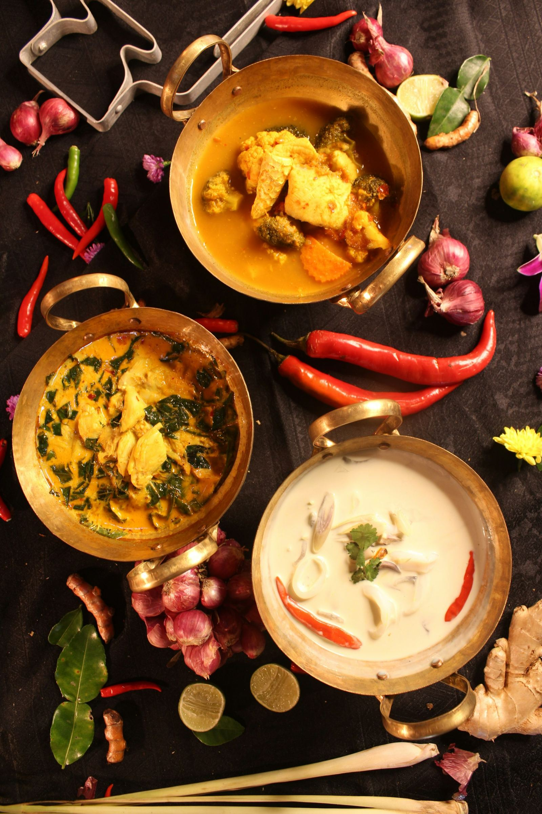
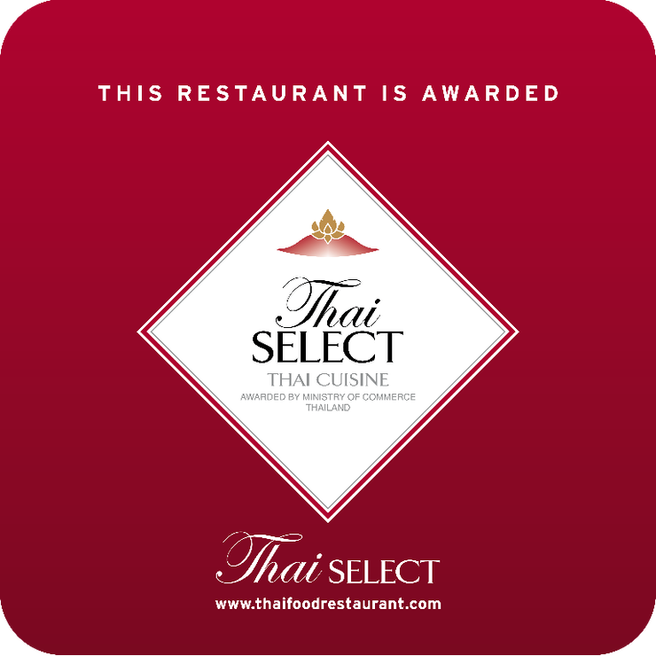
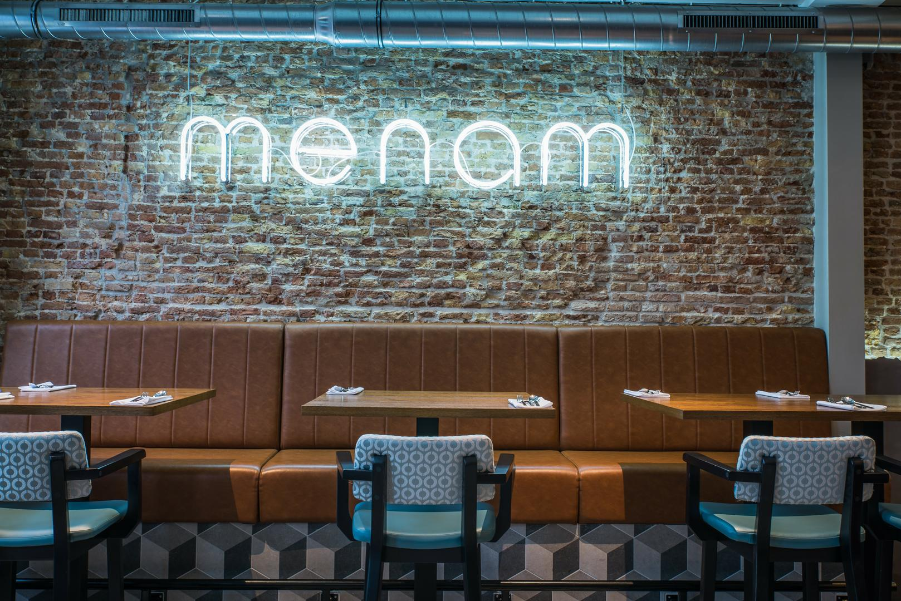

Bezorger
Je brengt de bestellingen met de elektrische fiets of de auto bij onze klanten thuis, op de afgesproken tijd en met een glimlach.
Reageren per e-mail of WhatsApp: info@menam.nl of 033 303 60 20.

Thai Kitchen in het centrum van Nijkerk
Authentiek Thais om af te halen of thuis te laten bezorgen.
Di t/m zo 16.00 – 21.00 uur afhalen en bezorgen. Maandag gesloten.

Bestel via onze webshop om vandaag nog op te halen of te laten bezorgen. Voor een andere dag kies je daar gewoon de gewenste datum.
Naar de webshopLiever niet online, of heb je speciale wensen? Bel ons op 033 303 60 20. Betalen kan dan contactloos of contant.
In postcodes 3861, 3862, 3863 en 3864 (gemeente Nijkerk). Bestellen vanaf € 15,-; bezorgen is gratis vanaf € 100,-. Bezorgtijden 16.00 – 20.55 uur.
Betalen. Online het liefst met iDEAL (€ 0,25 transactiekosten). Contant of pin/creditcard bij afhalen of bezorgen kost niets extra. Vooruitbestellen voor een andere dag gaat alleen met iDEAL.
Sparen. Bij elke € 10,- die je via de webshop besteedt krijg je een punt; bij 15 punten krijg je € 5,- korting. De webshop heeft ook een Android-app, een nieuwsbrief en wisselende acties, zoals de Phad Thai Wednesday. Op de webshop staan ruim 1.500 reviews van klanten.


We zitten in de Kolkstraat, tussen het Plein en de Vrijheidslaan. Makkelijk te bereiken met de auto of de fiets; vanaf station Nijkerk is het ongeveer 10 minuten lopen.
Genoeg betaald parkeren in Nijkerk. Parkeergarage De Bonte Koe ligt via het voetpad achter ons. Betaald parkeren ma t/m za 9.00 – 21.00 uur, zondag de hele dag gratis. De plaatsen bij het stadhuis zijn altijd gratis, 5 minuten lopen.
Contant, pin en creditcard van alle grote maatschappijen, waaronder American Express, Mastercard en Visa.
Een Menam-cadeaubon kan voor elk bedrag, en is nu te koop bij ons aan de Kolkstraat. Meerdere bonnen voor je bedrijf? Neem even contact op. We accepteren ook VVV-cadeaubonnen en Dinercadeau-kaarten.
Gecertificeerd authentiek Thais. Menam heeft het Thai SELECT-keurmerk voor Thaise keuken, toegekend door het Ministry of Commerce van Thailand.
Wij verzorgen catering op locatie, van a tot z. Het eten wordt warm gehouden in speciale warmhoudbakken; borden en bestek kun je erbij bestellen. De prijs hangt af van de locatie, het aantal personen en hoeveel verschillende gerechten je wilt.
Vraag een offerte op maat aan door ons een mail te sturen met:

Voor de uitbreiding van ons team en onze activiteiten zoeken we nieuwe collega's.
Je brengt de bestellingen met de elektrische fiets of de auto bij onze klanten thuis, op de afgesproken tijd en met een glimlach.
Reageren per e-mail of WhatsApp: info@menam.nl of 033 303 60 20.
Je komt in ons keukenteam en kookt met authentieke recepten. We vragen:
Menam is a Thai specialty restaurant in the centre of Nijkerk. We are looking for a Kok II (cook) to join our kitchen team.
Mail je reactie naar info@menam.nl.
Menam Thai Kitchen
Kolkstraat 4
3861 AK Nijkerk
| Maandag | gesloten |
|---|---|
| Dinsdag t/m zondag | 16.00 – 21.00 |